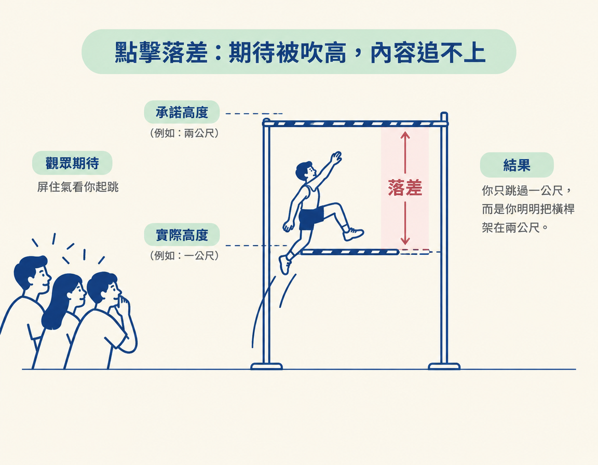
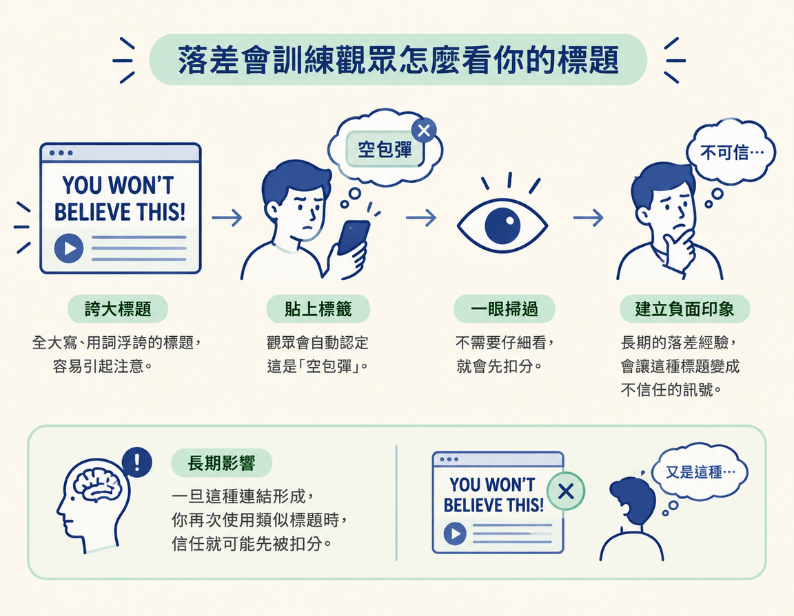
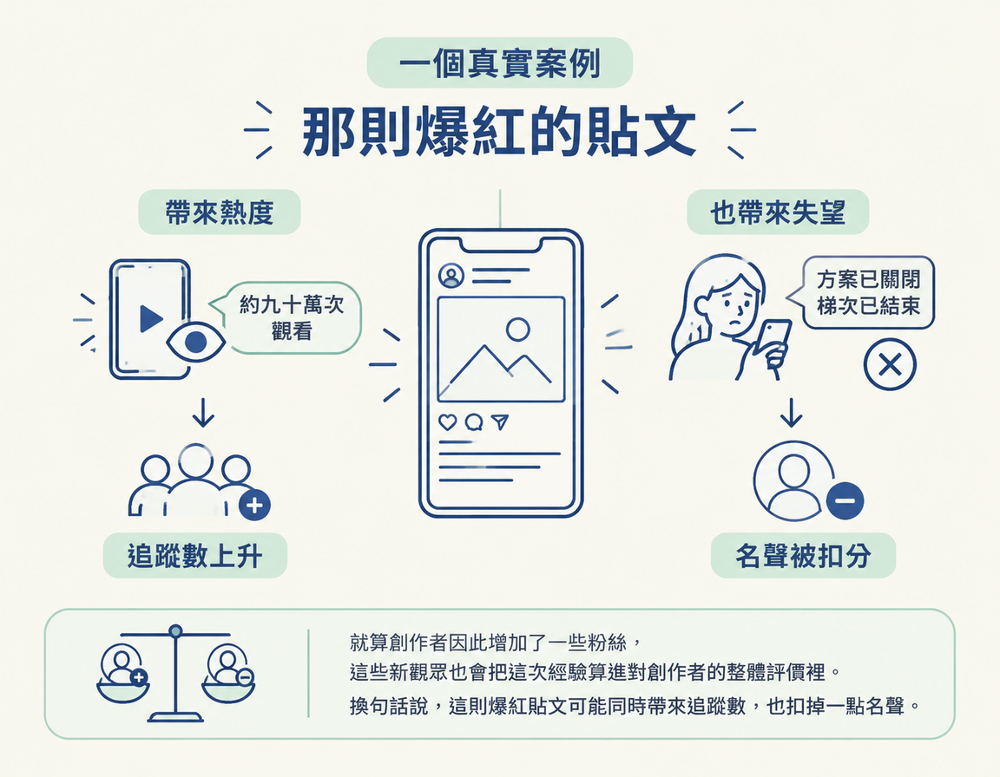

看懂點擊誘餌如何拉高觀眾的期待、造成落差，並逐漸侵蝕創作者的名聲。
上一節談到一條原則：包裝是一種承諾，最好讓承諾低於實際交付。這一節接著看相反的情況：如果標題把承諾拉得很高，內容卻跟不上，會發生什麼事？
這一步要做的，是從「包裝承諾了什麼」看見「觀眾實際得到什麼」之間的差距。它承接上一節的包裝原則，幫你判斷點擊誘餌如何影響觀眾對創作者的信任。看完後，你會更清楚該用什麼標準檢查標題和內容是否相符。
很多人以為點擊誘餌不過是標題比較聳動，觀眾上當一次也就算了。真正麻煩的，是它可能慢慢改變觀眾看待你的方式。這一節就來拆解這條信任流失的路徑。
先釐清一個容易誤會的地方：點擊誘餌（clickbait）指的是用吸引人點擊的包裝來引起觀眾注意。課程並不認為它天生就是壞事，也不認為只要用了就一定該被討厭。真正的問題，在於它怎麼影響觀眾的期待，以及內容能不能兌現這份期待。
點擊誘餌常見的問題，是把觀眾的期待吹得很大。像「你絕對不會相信」、「這會徹底改變你的一生」、「這會永遠改變你工作的方式」這類標題，會先把期待推到很高。觀眾點進來後，卻可能發現內容撐不起這樣的承諾。
期待的高度和內容實際提供的價值之間的空隙，就是課程所說的點擊落差（clickbait gap）。落差不是因為觀眾太挑剔，而是包裝先許下了內容無法兌現的承諾。
可以把它想成跳高：包裝把橫桿架到兩公尺，觀眾屏住氣看你起跳，結果你只跳過一公尺。中間那一公尺，就是落差。觀眾失望的不是「你只跳了一公尺」，而是「你明明把橫桿架在兩公尺」。

點擊落差扣掉的，是課程所說的「事實型的名聲」（factual reputation）。簡單來說，就是觀眾心中那本「這個人講的話能不能信」的帳。觀眾被落差辜負一次，不一定會立刻翻臉、從此不看你的內容，但這次經驗可能會一點一點扣掉你的可信度。
關鍵在於，名聲通常不是一次崩掉，而是隨著每次落差逐漸流失。這也讓問題不容易察覺：單看一支影片，你可能幾乎感覺不到損失。
落差影響的不只是一回點擊，也會慢慢教會觀眾怎麼解讀你的標題。當誇大的標題愈來愈常見，觀眾可能就會認定：全大寫、用詞誇張的標題，通常只是空包彈。
課程指出，隨著內容空間成熟，這類標題可能變成一種負面訊號，讓人一眼就不信任創作者。觀眾會懷疑，標題背後的人只是想把自己騙進來，讓自己看完整支影片。一旦這種連結形成，你再次使用類似標題時，信任就可能先被扣分。

對剛開始的人，課程的建議很直接：盡量避免全大寫的點擊誘餌標題。這不是道德問題，而是名聲如何累積的問題。信任建立得慢，流失卻可能很快。剛起步時，更經不起一再消耗。
課程舉了一個真實例子。在 AI 內容領域，有一則貼文大意是：「Anthropic 每個月付 7,000 美元，請一些人去學 AI。」這則貼文爆紅，替那位創作者帶來大約 90 萬次觀看。
問題出在時間。等觀眾真的去找資料、想要報名時，方案早已關閉，那一梯次也已經結束好幾週。貼文本身也許不是惡意造假，卻留下了一道落差：觀眾被「一個月 7,000 美元」吸引進來，最後卻發現自己撲了空。
課程接著點出關鍵：就算創作者因此增加了一些粉絲，這些新觀眾也會把這次經驗算進對創作者的整體評價裡。換句話說，這則爆紅貼文可能同時帶來追蹤數，也扣掉一點名聲。

不要把這條原則誤解成「一律不准用強烈的標題」。課程的重點是：問題在於點擊誘餌造成的落差，而不是標題本身夠不夠醒目。如果內容真的撐得起標題，那就是準確的包裝，不是點擊誘餌。
反過來說，即使沒有使用誇大的字眼，只要包裝讓觀眾期待一件內容無法提供的事，落差依然存在。所以判準不是「字夠不夠強」，而是「內容有沒有追上包裝」。
點擊誘餌不是天生有罪，但它常常會把觀眾的期待吹高。內容追不上，便留下點擊落差。落差會消耗觀眾的信任，也可能讓他們把誇大標題和「不值得信任的人」連在一起。這種損失往往慢慢累積：一次扣一點，久了名聲就會變薄。
講到這裡，你可能會想：就算觀眾失望，點擊數畢竟還是賺到了。可是平台自己也有帳要算。下一節會說明，為什麼平台其實站在反點擊誘餌這一邊。